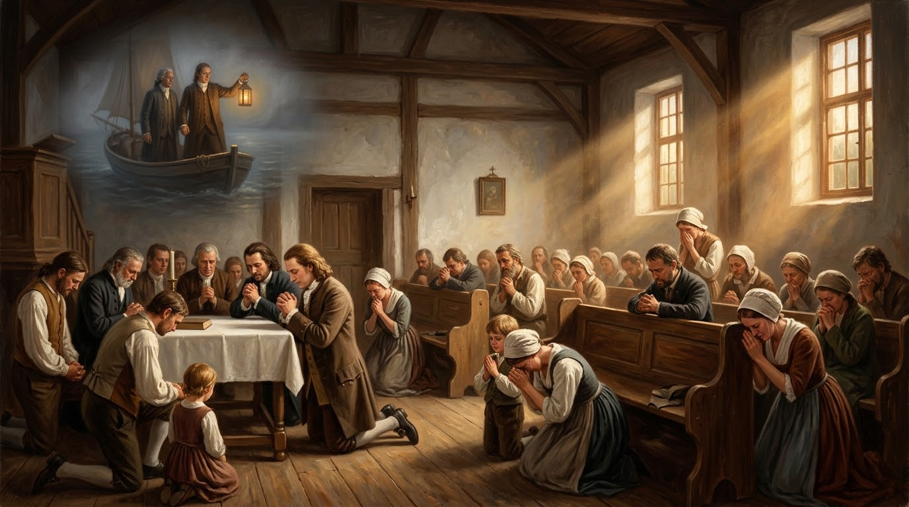

A Unidade da Irmandade, a Vigília de 100 Anos, o Impacto Global e o Brado do Cordeiro

Em 1722, o nobre luterano Conde Nikolaus Ludwig von Zinzendorf acolheu em suas terras em Berthelsdorf (Sexta, Alemanha) um grupo de refugiados protestantes perseguidos vindos da Morávia e Boêmia. Liderados pelo carpinteiro Christian David, esses fiéis eram herdeiros espirituais do reformador Jan Hus (*Unitas Fratrum*).
Fundaram a vila de Herrnhut ("O Abrigo do Senhor"). No entanto, entre 1722 e 1727, a comunidade foi dilacerada por discórdia teológica, sectarismo e divergências eclesiásticas ríspidas, ameaçando a dissolução do povoado antes de qualquer frutificação espiritual.
A força motriz por trás da dedicação de Zinzendorf à causa de Deus nasceu de um encontro pessoal marcante na sua juventude, em 1719, na galeria de arte de Düsseldorf.
O Confronto Diante da Pintura "Ecce Homo":
Ajoelhado perante o quadro do pintor Domenico Feti, que retratava Jesus coroado de espinhos perante Pôncio Pilatos, Zinzendorf leu a inscrição em latim gravada na base da tela:
“Ego haec feci pro te; quid facis pro me?”
(“Isto fiz por ti; o que fazes tu por mim?”)
Aquele momento selou o destino de Zinzendorf. Ele declarou que, a partir daquele dia, amaria a Cristo com uma paixão irrestrita e que a sua única ocupação seria glorificar o Cordeiro de Deus.
A virada histórica em Herrnhut ocorreu após Zinzendorf redigir o "Estatuto do Fraternal Acordo", levando a comunidade a arrepender-se da amargura mútua. Em 13 de agosto de 1727, durante o culto de Santa Ceia na igreja de Berthelsdorf, o Espírito Santo desceu sobre a congregação de maneira avassaladora.
O aspecto extraordinário desse evento foi a sua dimensão ubíqua (sem limitação espacial): o poder de Deus não ficou retido ao interior do templo. Relatos históricos documentam que pessoas que trabalhavam nos campos a quilômetros de distância e crianças que estavam em suas casas foram tomadas simultaneamente pelo mesmo espírito de oração, choro e profunda convicção de pecado, correndo para reconciliarem-se uns com os outros sem saberem o que acontecia na igreja.
Como resposta ao derramamento do Espírito, a comunidade compreendeu que a chama do altar jamais poderia se apagar (fundamentados em Levítico 6:13). Em 27 de agosto de 1727, 24 homens e 24 mulheres comprometeram-se a orar em turnos de 1 hora, cobrindo as 24 horas do dia.
Essa vigília ininterrupta — conhecida como a Hourly Intercession — manteve-se **ativa dia e noite por mais de 100 anos**. Das orações contínuas de Herrnhut jorrou o combustível para o maior envio missionário da história protestante até então.
Em 1735, a caminho da Geórgia num navio britânico, John Wesley presenciou uma tempestade avassaladora no Atlântico. Enquanto os marinheiros ingleses gritavam de pânico, um grupo de missionários Morávios cantava salmos em total paz e serenidade. Ao perguntar-lhes se não tinham medo de morrer, o líder morávio respondeu: “Nossas mulheres e crianças não têm medo da morte, pois conhecemos o Cordeiro.”
Essa vivência conduziu Wesley à sua famosa experiência do "coração aquecido" na reunião da Aldersgate Street, em Londres, influenciando diretamente o nascimento do Movimento Metodista.
A paixão morávia pelo sofrimento de Cristo e pelo amor abnegado encontrou eco em grandes figuras do cristianismo global, incluindo o evangelista indiano **Sadhu Sundar Singh**. O modelo morávio de despojamento total e simplicidade missionária inspirou o Sadhu a percorrer o Himalaia e o Tibete vestindo a túnica amarela dos acadêmicos asiáticos, levando o Evangelho sem ocidentalizar a mensagem.
Os Morávios foram pioneiros absolutos das missões transculturais. Missionários como Johann Leonhard Dober e David Nitschmann embarcaram para as Índias Ocidentais (São Tomás) dispostos a se venderem como escravos, se necessário, para pregar aos cativos. Ao partirem do porto, bradaram o lema que se tornou o seu grito de guerra:
“May the Lamb that was slain receive the reward of His suffering!”
(“Que o Cordeiro que foi morto receba a recompensa do Seu sofrimento!”)
Impulsionados pelo desejo de alcançar os povos originários e as populações escravizadas da América do Sul, os Morávios estabeleceram bases na Guiana Holandesa (Suriname) a partir de 1735. A partir dali, enviaram expedições para tentar penetrar o território do **Brasil Colonial**.
No entanto, as rígidas leis da Coroa Portuguesa e o monopólio da Igreja Católica na colônia impediram a fixação permanente dos Morávios no Brasil. Mesmo bloqueados institucionalmente, o modelo de intercessão e a paixão dos Morávios abriram o caminho espiritual para as missões protestantes futuras na América Latina.
O avivamento morávio assenta teologicamente em dois pilares do Novo Testamento:
A espiritualidade de Zinzendorf e dos Morávios tem afinidades profundas com a tradição mística da Paixão de Cristo (frequente em São Bernardo de Claraval e Thomas de Kempis em *A Imitação de Cristo*):
Para os Morávios, a oração não era uma busca por benefícios pessoais, mas um ato de consolo ao coração do Cordeiro. Essa mística da entrega total transformou trabalhadores braçais e camponeses em gigantes espirituais que mudaram a geografia do cristianismo mundial.
| Princípio Bíblico / Teológico | Prática Registrada em Herrnhut | Impacto Histórico e Global |
|---|---|---|
| Oração Contínua (Levítico 6:13; 1 Tessalonicenses 5:17) |
Relógio de Oração de 24 horas durante mais de 100 anos. | Sustentação espiritual para o envio de centenas de missionários transculturais. |
| Unidade do Corpo de Cristo (João 17; Salmo 133) |
Assinatura do "Fraternal Acordo" e perdão mútuo. | Fim das divisões sectárias e derramamento do Espírito em 13 de agosto. |
| A Recompensa do Cordeiro (Apocalipse 5:12; Gálatas 6:14) |
Dedicação total à evangelização de escravizados e povos isolados. | Nascimento das missões protestantes modernas e envio para o Caribe, Ásia e Américas. |
| Testemunho na Adversidade (Atos 16:25; Romanos 8:38-39) |
Serenidade dos Morávios durante a tempestade no oceano. | Conversão de John Wesley e nascimento do Avivamento Metodista. |
O estudo do Avivamento de Herrnhut demonstra que a oração contínua e a unidade fraternal são as chaves fundamentais para libertar o poder transformador do Evangelho no mundo.
A herança dos Morávios desafia a Igreja de todas as épocas a colocar a glória e a recompensa do Cordeiro acima de qualquer interesse denominacional ou conforto pessoal, provando que uma pequena comunidade totalmente entregue a Deus pode alterar o curso da história humana.